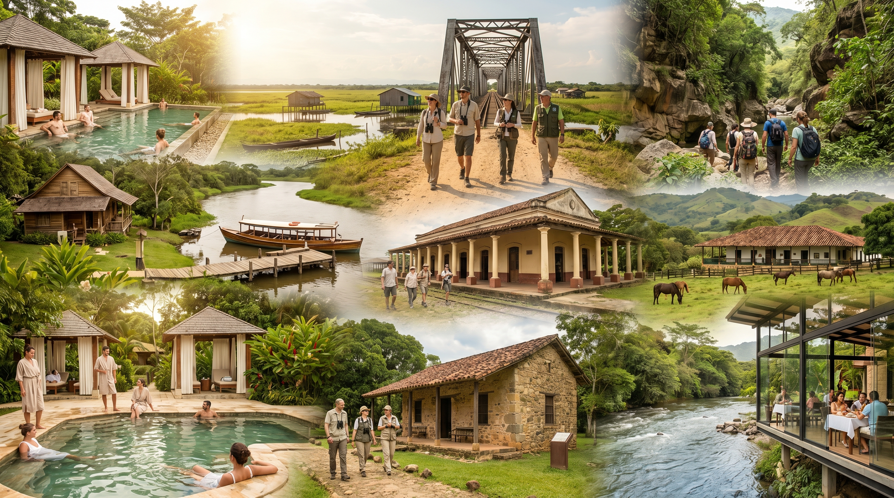

6 días / experiencia integral
Ruta 5 — Ruta completa
Integra balneario (La Alpina, Candilejas), Ciénaga de Barbacoas, patrimonio urbano (parques, Brigada, estación, puente), operadores Conecta Nativa, cañón y Ecorrefugio Alicante, hoteles ganaderos en Maceo, San Juan de Bedout y cierre con Piway.
$1.306.000 – $2.082.000 COP / persona (aprox.)
Orden de puntos (referencia informe)
- Medellín
- Casa del río hotel
- La Alpina · Candilejas
- Puerto de lanchas · Ciénaga · Biochicoas
- Parque Principal · Casa Museo Brigada · Estación · Puente
- Conecta Nativa
- Cañón Río Alicante · Ecorrefugio · Agromaceo · San Juan de Bedout
- Piway
- Medellín